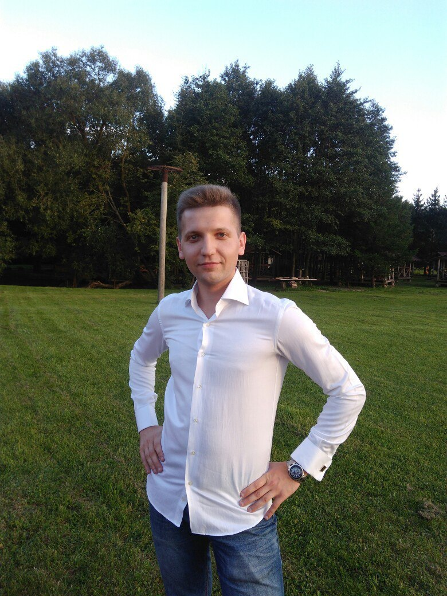

Personal information:
Contacts:
+375(29)876-38-37
sergeyruzhankov@gmail.com
Sergey_Ruzhankov(Sergey4846)#1311
About myself:
I am 29 years old, I live and work in Belarus, in Minsk. I work as a taxi driver. In June 2021, I decided to become a front-end developer and enter the information technology field. I believe that IT and the Internet are the future, so I want to develop in this area. I enjoy working in a team and learning something new every time. It’s interesting and fun, especially when you get feedback and results. At the moment I am taking the Stage0 JS / FE Pre-School course at RS school. In the future, I want to become a front-end developer and make the world a better place by creating quality websites. For a powerful and confident start, I chose EPAM because it is serious, well-known and ready to help newcomers like me enter the IT field and build a career, gain teamwork and programming skills. I believe that everything will work out for me.
Experience:
Skills:
{ Code example:
Calculating the area of a circle and a rectangle from the entered parameters using java.
import java.util.Scanner;
public class solution {
public static void main(String[] args) {
Scanner scnew = new Scanner(System.in);
int a = scnew.nextInt();
int b = scnew.nextInt();
int r = scnew.nextInt();
double circleArea = 3.14 * (r * r);
double rectangleArea = a * b;
if (circleArea > rectangleArea)
System.out.println("Картонка с данным радиусом закрывает прямоугольник");
else
System.out.println("Картонка с данным радиусом не закрывает прямоугольник");
}
}; Education:
Languages: